Strategy Filter (Stay tuned!)
Overview: This sector will enable users to "filter" the coastline and get the ideal location for a certain strategy they want to build, which does the opposite work of the unit generator. The unit generator will give suggestions for the coastal engineering strategy in a certain area, but the strategy filter will return areas that are suitable for a certain coastal engineering strategy.
Data Explorer (Stay tuned!)
Overview: This sector will present all the GIS data used in the whole site, either the unit generator or the strategy filter, and the source for each of them.
Strategy List (Stay tuned!)
Overview: This sector will describe all the possible coastal engineering strategies that you can get from the unit generator or input in the strategy filter.
Documentation
Unit Generator Explanation
Purpose and Goal
Operational coastal units are seen as a relatively untested and novel approach to coastal analysis that could hold particular potential in decision-making processes that require considering both local conditions and regional transferability. At its most simplistic, the operational coastal unit method assumes that there is value in defining new boundaries for where particular strategies are or are not applicable based on the contextual conditions found in specific places. And perhaps most importantly, that these new boundaries need not respond to existing administrative jurisdictions. Underpinning this idea are two overarching goals, balanced with one another.
That local conditions and context are important culturally and ecologically. Decision-making regarding the shoreline should take into consideration the cultural values and knowledge that exist and have evolved in those specific areas. Additionally, the ecological context of any given location should be considered as important and special as opposed to generalized into a larger and more abstract idea of 'ecology'. In these ways, local conditions can be both acknowledged and formative in the decision-making processes to encourage the development of more sensitive and contextual outcomes. Put simply, the more local, the better.
That transferability is to some degree essential to the practicality of any formal coastal management decision. This does not mean that transferability is what is desired, but only that it is what is necessary to get projects funded and completed. In this way, projects should aim to be as contextually specific as possible while only being as transferable as necessary. However, in the correct circumstances, transferability could provide the opportunity for ideas to spread within areas of similar contextual conditions which does offer both cost savings and project innovation.
With these two balanced goals in mind, this project aims to establish a method for creating coastal units that are particular and appropriate for a given task. This specific project asks to look at the application of the operational coastal units in coastal management decisions that involve strategic sediment management and adaptability as a defining feature, although many other objectives could also be met with the coastal unit methods and efforts have been made to develop a more robust unit structure to accommodate some of these alternative objectives.
Steps Explanation
General
-
How to use the buttons in each step:
At the initial state, all the input boxes and buttons are locked except theStart/Resetbutton in step one. To start generating the units, click theStart/Resetbutton. For all the other buttons, they should be clicked in sequence. That is to say, after finishing choosing or typing the inputs, click theGenerate/Resetbutton to preview the result, and if the result looks good, click theNextbutton in each step to unlock the input boxes and buttons in the following step. -
Vocabulary:
-
Resolution:
Continuous small pieces with the same length. It is the product of dividing a longer line. This is the overall fidelity or detail of the unit generation process along the length of the selected study area. It is effectively the “cell size” that the selected area is split into before attributes are applied to them and they are then re-assembled into units. For example: If 50 meters is selected as the resolution, the selected study area will be split into 50-meter segments along its length and attributes of the following steps applied to those 50-meter segments.
-
Priority:
List of criteria that will be used to weight the calculations. These are the topics of interest to the user that assemble different data sets together to be applied to the cells created in the previous step. For example: If “coastal erosion” and “habitat creation” are selected, datasets will be assembled to create operational coastal units that prioritize coastal erosion first and habitat creation second. The outcome of this process is the application of a rating for each segment from 0-1, based on how it applies to the selected priorities. More details on what datasets are used for what priority are included below.
-
Group:
The number of group types. A group means a group of resolution that has similar score from calculations. Multiple units may be in the same group. This indicates how many groups the user would like the prioritized cells to be assembled into. For example, in Figure 5 below, the user selected 3 groups, making values of 1-3 in the red group, 4-6 in the yellow group, and 7-10 in the blue group. As the example illustrates, 3 groups do not equal 3 units, (the example has 6 units) as the unit number will vary based on the distribution of priority ratings.
-
Unit:
Final product of this tool with a unique ID.
-
-
Summary of the working method for operational coastal unit delineation
Figure 1. Divide: Coast divided into "cells" of set size, e.g. 10 meters.
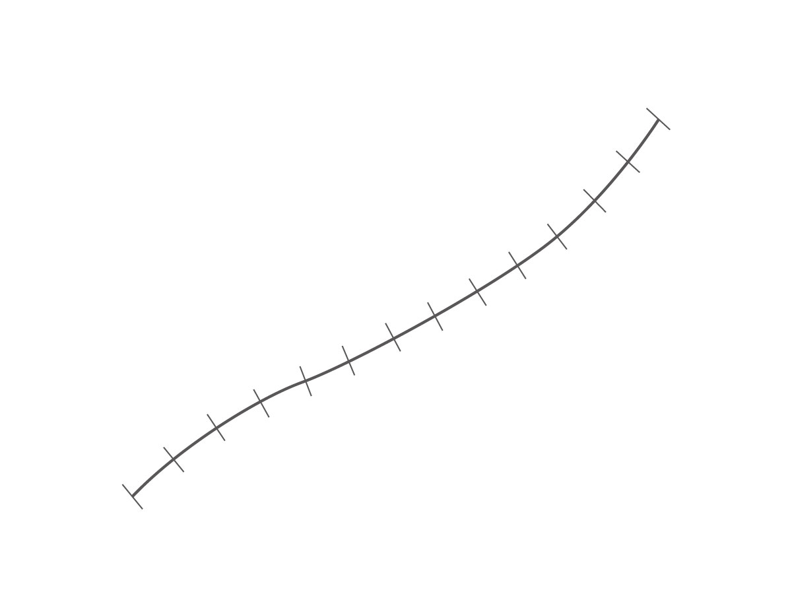Figure 2. Match: Datasets are also divided and matched to cells.
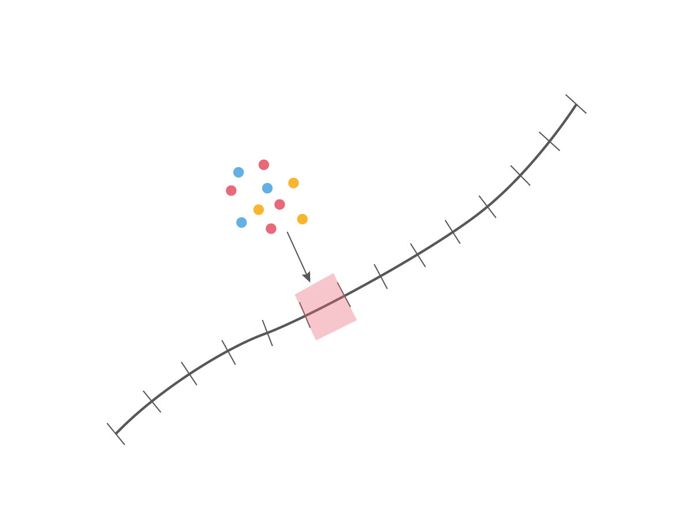Figure 3. Class: Data in each cell is classed based on user priority.
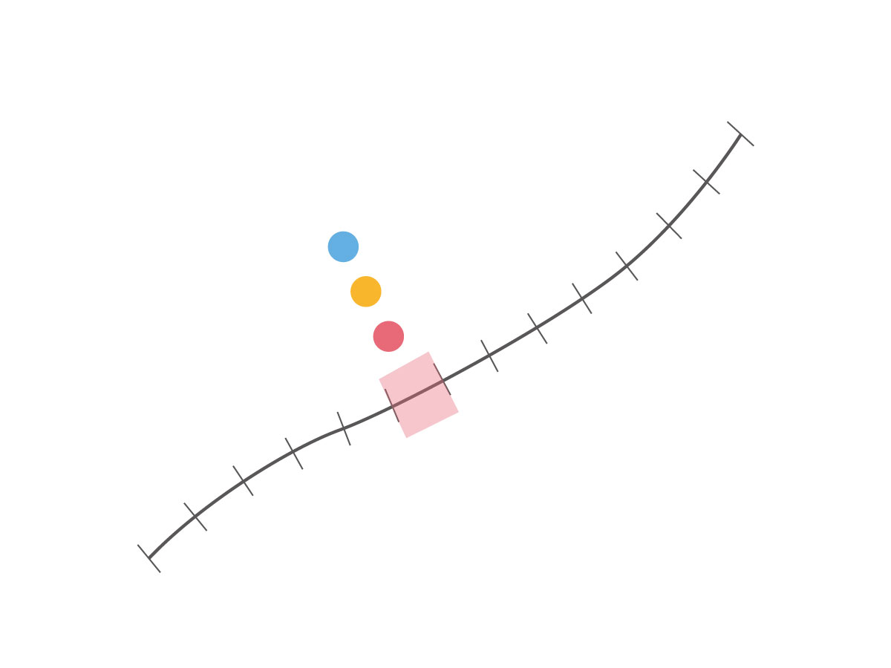Figure 4. Score: Scores are assigned to each cell based on classification.
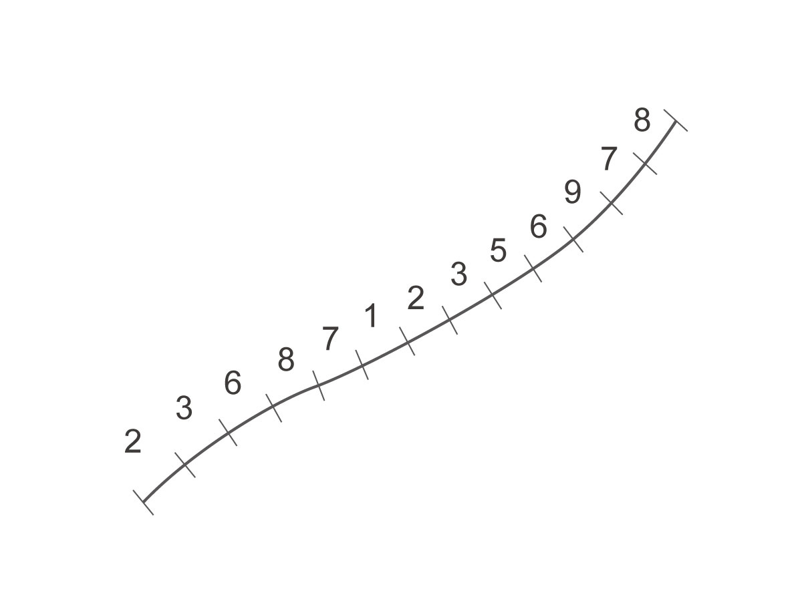Figure 5. Group: Cells are grouped into coastal units based on scores and desired group number.
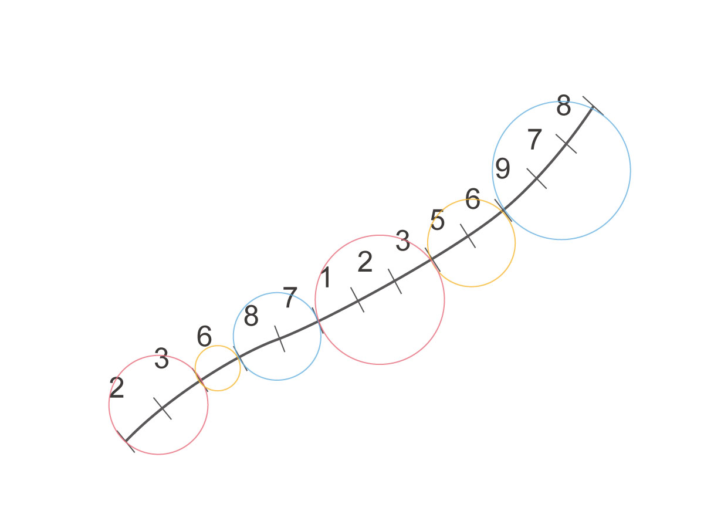
Step by Step Instructions
Step 1: Choose your area
Purpose:
This step will help choose your area of interest along the Lake Erie shoreline of New York State, which will be the base of the calculations in the following steps and the area that will eventually be divided into units.-
Method:
- Click the
Start/Resetbutton to start. After clicking it, you will see two pins appear at the two ends of the coastal line. - Drag the two pins to the two ends of the area of interest along the coastline. The pins will automatically snap to the location of the coastline. You can drag and redrag for multiple times until you are satisfied with the result.
- After you drag the pins to the desired location, click the
Nextbutton to move to step 2, which will zoom the map to your selected location and unlock the input boxes in step 2.
- Click the
Input Description:
There are no input boxes in this step: interact with the map to choose your area.Important:
Remember to click theStart/Resetbutton to initialize this tool and click theNextbutton to move to step 2.
Step 2: Choose resolution
Purpose:
This step will divide the coastline you choose in step 1 to multiple small pieces with the same length, which is calledResolution.-
Method:
- In the input box below the
Resolution, type the length (as numbers) you want to have for each resolution. You can choose the unit (e.g. feet, meter) in the dropdown box next to the input box.
- In the input box below the
-
Input Description:
Resolutipn: The length that will be used to divide the coastline. For example, if you type "30" and choose "feet" as the unit type, the coastline chunk you selected in the previous step will be separated into small line segments that are 30 feet each.
Step 3: Choose priority
Purpose:
This step will do the scoring for each resolution based on the criteria you choose in thePrioritydropdown box and color each resolution by its final score.-
Method:
- Pick the scoring criteria that you are interested in. In the dropdown box next to
First, select the criterion that you care the most. The score for each resolution will be weighted based on the priority list you choose. - After you fill in all the input boxes, click the
Generate/Resetbutton to preview the result, which will display the score for each resolution in a color gradient. You can click theGenerate/Resetfor multiple times to change inputs (you can also change the resolution in step 2 at this point). - After you are satisfied with the preview result, click the
Nextbutton to move to step 3, which will unlock the input boxes in step 3.
- Pick the scoring criteria that you are interested in. In the dropdown box next to
-
Input Description:
Priority: In this part, you will specify the criteria you want to use to determine the final units of your selected coastline. The score calculation for each criterion behind the scenes is linked to a certain calculation of GIS layers related to that criteria, called the "criteria model". See the "Criteria Models Explanation" below for details about each calculation.
Important:
Remember to click theStart/Resetbutton to initialize this tool and click theNextbutton to move to step 4.Warning:
Because of the limitation of the original GIS layers, some GIS layers may not cover the whole coastline of Lake Erie. In that case, the final result of this tool may not be precise. See the "Criteria Models Explanation" below for details.
Step 4: Group into Final Units
Purpose:
This step will group the resolution with similar scores from step 2 into differentgroupsand display the final units through a box around each unit.-
Method:
- In the input box below the
Number of groups, type the number of groups (as numbers) you want to have for the final result. Multiple final units may be in the same group. The group stands for the number of group types that you want to have for the final result. - Next, click the
Generate/Resetbutton to preview the result, which will display the final units generated from the number of groups you specified above by circling them in boxes. When hover over each box, a pop-up will show the group type of that unit, and when you click each box, a panel will display more detailed information about each unit. You can click theGenerate/Resetfor multiple times. - After you are satisfied with the preview result, click the
Nextbutton to move to step 4, which will unlock the input boxes in step 4.
- In the input box below the
Input Description:
Number of groups: The number of unit types you want to have for the final units based on the score of the resolution. Resolutions with similar final scores will be grouped together to form the final unit. Each group may belong to multiple units. It is also possible that one or multiple group types are not connected to any units.Important:
Remember to click theStart/Resetbutton to initialize this tool and click theNextbutton to move to step 2.
Step 5: Download
Purpose:
This step will let you download your result generated from the previous steps and use it elsewhere.-
Method:
- In the input box below the
Download Units, choose the type of file that you want to generate. Currently, this step accepts geoJSON and shapefile. - Next, click the
Downloadbutton and a pop-up window will allow you the select the saving location.
- In the input box below the
Criteria Models Explanation
General
What's the weight for each priority:
First priority 50%, second priority 30%, third priority 20%.How to assign value from GIS layer to each resolution:
The resolution line will be offset for a certain distance (default is 200 meters) in both directions to create a bounding box. The values in each GIS layer will be assigned to the resolution if they overlap with the bounding box of the resolution line. If more than one value overlaps with the bounding box, the values will be averaged. If no value overlaps with the bounding box, the value for the resolution will be the value of the nearest GIS object.
Sediment Loss Model
Description:
This model focuses on the actual sediment loss amount along the shoreline. Higher score means higher amount of sediment loss.-
GIS Data:
-
Sediment budget: The Sediment Budget, produced by the United States Army Corps of Engineers for both Lake Erie and Lake Ontario covers the large extent of our study area. The sediment budget estimates the gain, loss, and movement of sediment across the lake shoreline, through a series of cells, each measuring approximately a half mile in length.
Coarse out: Coarse Material leaving the cell for open water.
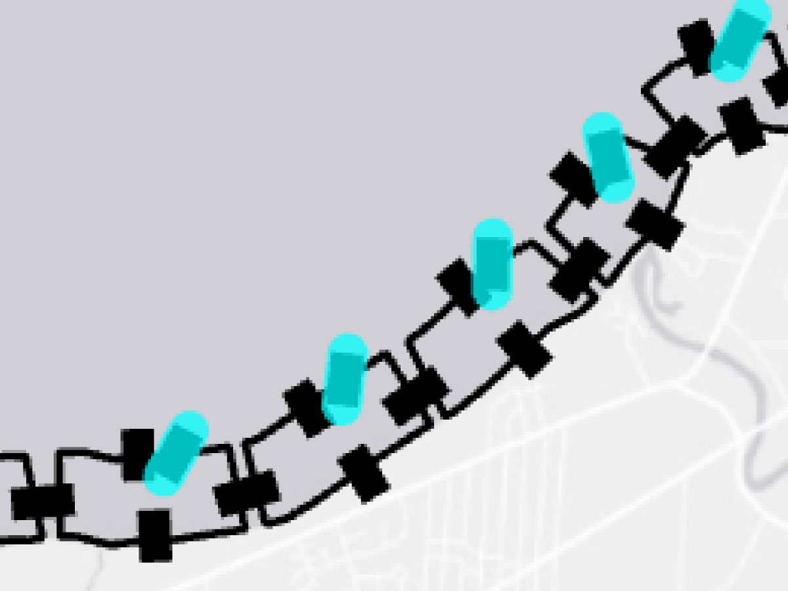Bypass: Material moved manually from one cell to another.
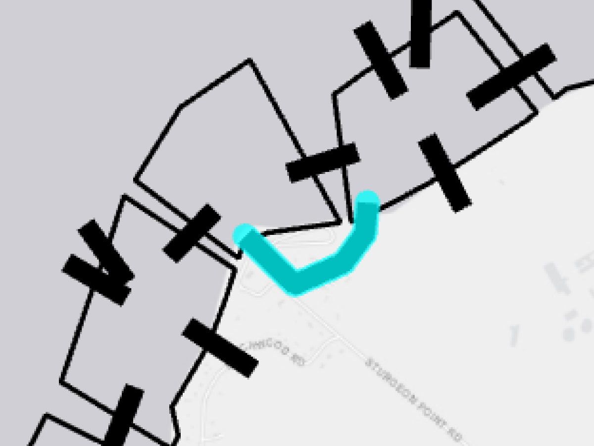Downdrift Loss: Material leaving cell to adjacent cell by downdrift.
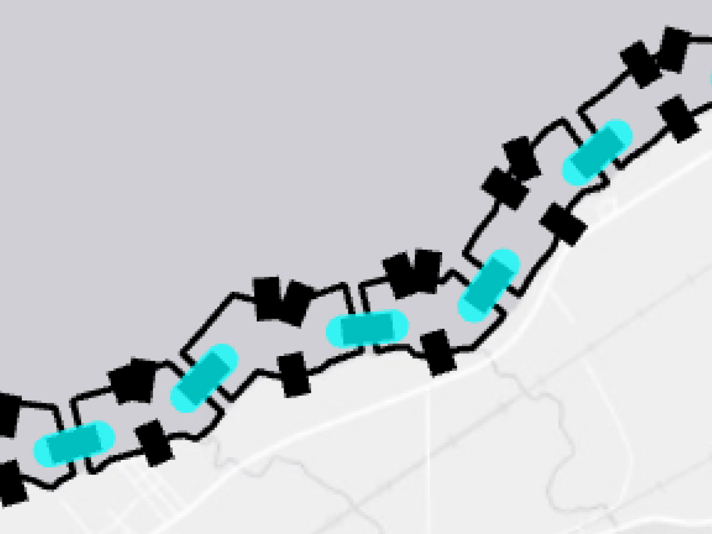Fines out: Fine Material leaving cell for open water.
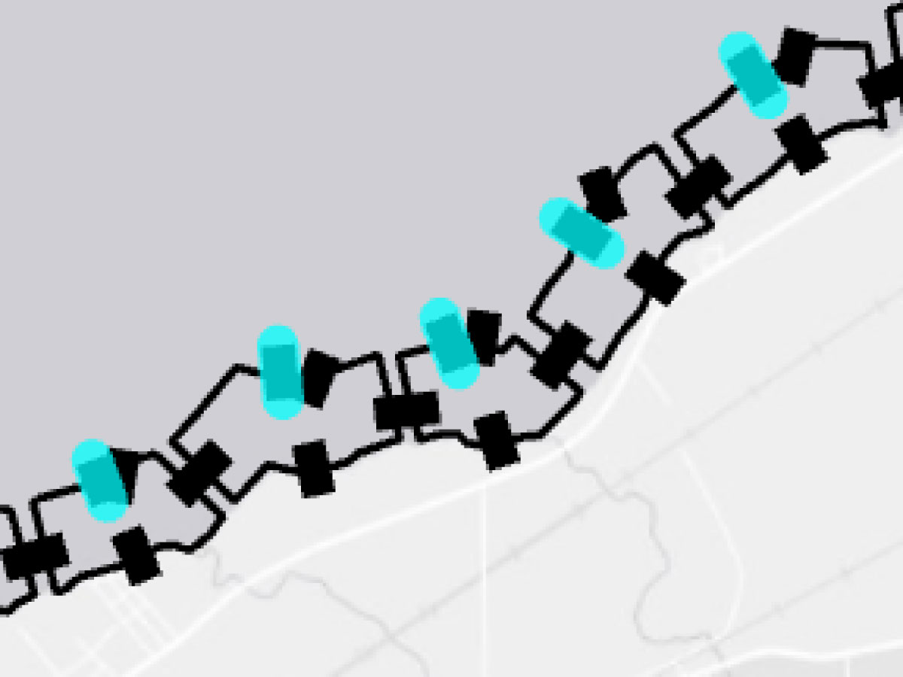Littoral coarse out: Coarse Material leaving cell to open water via littoral transport.
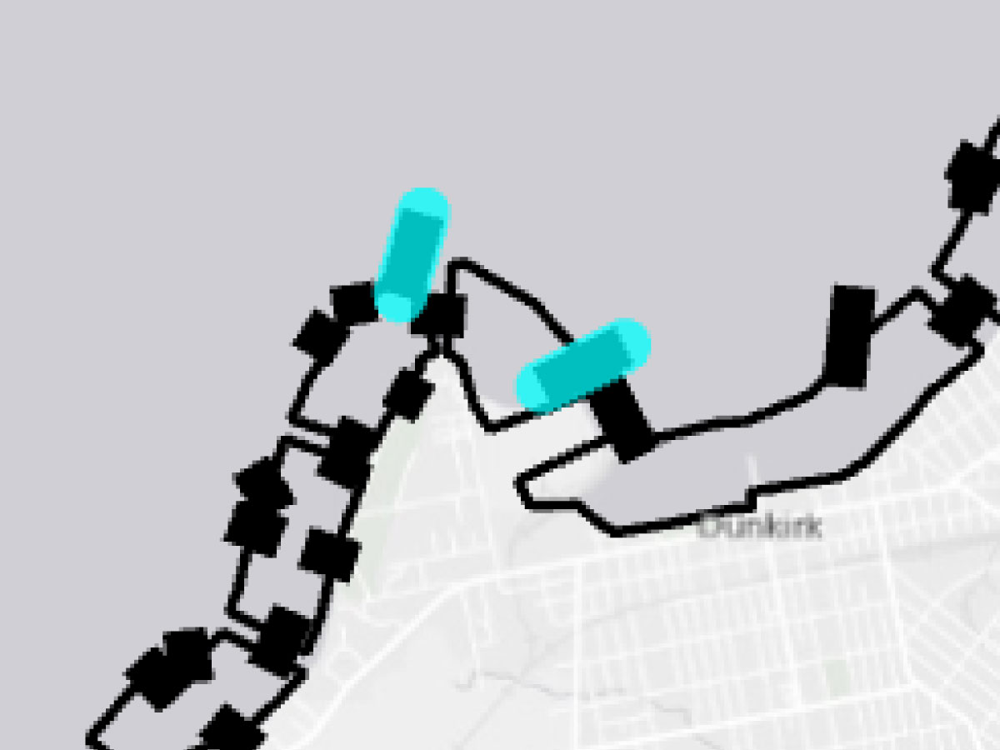
-
Sediment budget: The Sediment Budget, produced by the United States Army Corps of Engineers for both Lake Erie and Lake Ontario covers the large extent of our study area. The sediment budget estimates the gain, loss, and movement of sediment across the lake shoreline, through a series of cells, each measuring approximately a half mile in length.
-
Calculating Algorithm:
- For each sediment budget cell, sediment loss = Coarse out + Bypass + Downdrift loss + Fines out + Littoral coarse out
- Rescale: the actual sediment loss value of all the resolution will be projected to a scale of 0 to 1, where closer to 0 means less loss and closer to 1 means more loss.
Warning:
The sediment budget layer does not have values for the area near Buffalo City. If the selected coastline includes those areas, the result may not be precise.
Sediment Gain Model
Description:
This model focuses on the actual sediment gain amount along the shoreline. Higher score means higher amount of sediment gain.-
GIS Data:
-
Sediment budget: The Sediment Budget, produced by the United States Army Corps of Engineers for both Lake Erie and Lake Ontario covers the large extent of our study area. The sediment budget estimates the gain, loss, and movement of sediment across the lake shoreline, through a series of cells, each measuring approximately a half mile in length.
Bluff in: Erosion from Bluff added to cell.
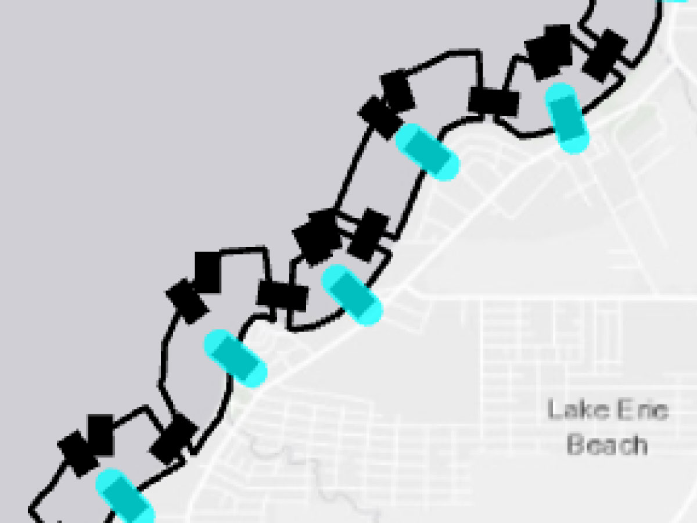Tributary bedload: Material added to cell via river input.
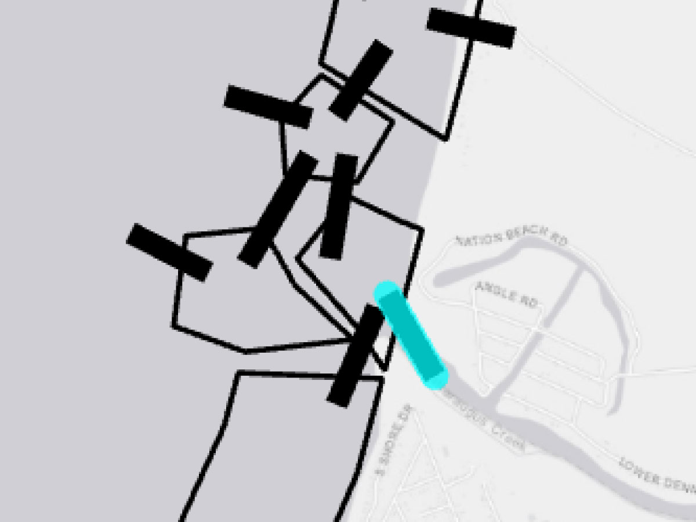Downdrift gain: Material added to cell from adjacent cell by downdrift.
Littoral coarse in: Coarse Material added to cell from open water via littoral transport.
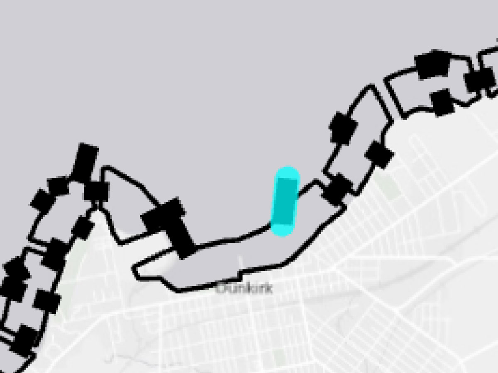
-
Sediment budget: The Sediment Budget, produced by the United States Army Corps of Engineers for both Lake Erie and Lake Ontario covers the large extent of our study area. The sediment budget estimates the gain, loss, and movement of sediment across the lake shoreline, through a series of cells, each measuring approximately a half mile in length.
-
Calculating Algorithm:
- For each sediment budget cell, sediment gain = Bluff in + Tributary bedload + Downdrift gain + Littoral coarse in
- Rescale: the actual sediment gain value of all the resolution will be projected to a scale of 0 to 1, where closer to 0 means less gain and closer to 1 means more loss.
Warning:
The sediment budget layer does not have values for the area near Buffalo City. If the selected coastline includes those areas, the result may not be precise.
Erosion Potential Model
Description:
This model focuses on the erosion potential of the coastal edge. Higher score means higher erosion potential.-
GIS Data:
- Retreat rate: The retreat rate is one of the properties of the sediment budget, which is produced by the United States Army Corps of Engineers for both Lake Erie and Lake Ontario. Similar to the other values from the sediment budget that are used in the sediment loss/gain model, the retreat rate value is recorded through a series of cells, each measuring approximately a half mile in length. Specifically, the retreat rate is the rate at which the shoreline is eroding, measured in feet per year.
- Shoreline type: The shoreline type GIS data contains baseline hardened shoreline classification, which specifies the current shoreline condition along the study area. The original data was created for the National Oceanic and Atmospheric Administration's Office for Coastal Management, in partnership with the United States Army Corps of Engineers, and funded through the Great Lakes Restoration Initiative to support detailed shoreline mapping.
- Soil erosion K factor: The soil K factor used in this model is from the USDA Natural Resources Conservation Service's Web Soil Survey. Based on their description, the K factor indicates the susceptibility of soil to sheet and rill erosion by water. The estimates are based primarily on the percentage of silt, sand, and organic matter and on soil structure and saturated hydraulic conductivity (Ksat). Values of K range from 0.02 to 0.69. Other factors being equal, the higher the value, the more susceptible the soil is to sheet and rill erosion by water. Specifically, we are using the K factor for the whole soil, which includes modifications based on the presence of rock fragments.
-
Calculating Algorithm:
- Weight among all GIS data: erosion potential for each resolution = 0.5 * retreat rate + 0.3 * shoreline type + 0.2 * soil K factor
- Rescale: the actual retreat rate value of all the resolution will be projected to a scale of 0 to 1, where closer to 0 means less shoreline erosion and closer to 1 means more shoreline erosion.
- Rescale: the actual soil K factor value of all the resolution will be projected to a scale of 0 to 1, where closer to 0 means less soil erosion and closer to 1 means more soil erosion.
- Because the shoreline type is categorical data, we assign a value of 0 to 5 to each category based on the category's eroding characteristics, and then rescale it to a scale of 0 to 1. Higher value means more related to erosion. The categories associated with each value are shown below:
- 0: 'Bedrock (Resistant) no overburden', 'Artificial Good Quality Well Engineered'
- 1: 'Bedrock (Resistant) with glacial overburden', 'Artificial Moderate Quality Moderately Engineered', 'Open Shore Wetlands'
- 2: 'Bedrock (Erosive) no overburden', 'Bedrock (Erosive) with glacial Overburden', 'Open Shoreline Wetlands', 'Composite Low Bank / Low Plain'
- 3: 'Artificial Poor Quality Poorly Engineered', 'Pocket Beach', 'Artificial Depositional (e.g., jetty, groin fill)', 'Bedrock (Resistant) with sand overburden'
- 4: 'Bedrock (Erosion) with sand overburden', 'Baymouth - Barrier (fronting wetlands or shallow embayments, estuaries)', 'Low Bank', 'Natural Depositional (areas with active supply/deposition)'
- 5: 'Rivermouth / Sheltered Wetlands', 'Sandy Low Bank / Low Plain', 'Sandy Beach / Dune (relict deposits, areas with no new deposition)', 'Cohesive Bluffs (composition unknown)', 'Sandy Beach / Dune Complex', 'Coarse Beaches', 'Sand or Cohesive Bluffs (Till or Lacustrine)', 'Composite Bluffs (sand content 20-50%)', 'Composite Bluffs (sand content >50%)', 'Gravel Beaches'
Warning:
The sediment budget layer does not have values (retreat rate) for the area near Buffalo City. Besides, the soil K factor also has many null values near Buffalo City. If the selected coastline includes those areas, the result may not be precise.
NFWF Habitat Protection Model
Description:
This model identifies critical habitat and protected areas for terrestrial and aquatic species of conservation concern. Higher scores represent areas that are important for numerous species of concern, where implementing a restoration project would likely provide the greatest benefit to wildlife.-
GIS Data:
-
Fish and Wildlife Index:
This model is based on the Fish and Wildlife Index developed by the National Fish and Wildlife Foundation. This index is the sum of the terrestrial and aquatic indexes, also developed by the NFWF, plus protected areas.
The terrestrial index identifies terrestrial wildlife species of greatest conservation need from state wildlife action plans, federally listed species, and GLIFWC harvest regulations. It then identifies suitable habitat for each species and sums them by taxonomic group, using the following datasets: USGS GAP Analysis, Critical Habitat, Important Bird Areas & Key Biodiversity Areas, and Coastal Bluffs and Dunes.
Using similar methodology, the aquatic index identifies species of concern in riverine and lacustrine habitats from the same three sources as the terrestrial index. It then identifies areas of suitable habitat for each species using the following datasets: Species Habitat Distribution, Critical Habitat, Spawning and Reef Locations, and the Great Lakes Eastern Brook Trout Conservation Portfolio.
Protected areas included in the model were sourced from the USGS Gap Analysis Project, Protected Areas Database of the United States (PAD-US) 2.1: U.S. Geological Survey data release, NOAA National Marine Sanctuaries, and ProtectedSeas.
-
Fish and Wildlife Index:
-
Calculating Algorithm:
-
Detailed methodology for calculating the Fish and Wildlife Index, including a complete list of species included in the analysis, input data sources, and geoprocessing steps, can be found in the following report:
Dobson, J.G., Johnson, I.P., Orlando, J.L., Lussier, B.C., and Byler, K.A. (2023) U.S.
Great Lakes Coastal Resilience Assessment (Appendix A.3-5, F-G). UNC Asheville National Environmental Modeling and Analysis Center, Asheville, NC. Prepared for the National Fish and Wildlife Foundation.
-
NOAA Wetland Protection/Restoration Model
Description:
This model highlights the potential for land to be a wetland in order to identify areas for restoration. The model does not represent the current landcover condition of wetlands, but rather the likelihood that a wetland would occur at a specific location given its soil characteristics, elevation, and existing landcover. Higher values represent a high likelihood of wetland, and low values represent areas where wetland establishment is very unlikely.-
GIS Data:
-
NOAA C-CAP National Wetland Potential:
This model is based on the NOAA C-CAP National Wetland Potential dataset by the NOAA Office for Coastal Management. Input data includes the National Wetland Inventory (NWI), Soil Survey Geographic (SSURGO) database, National Hydrography Dataset (NHD), National Elevation Dataset (NED), and Landsat Satellite Imagery.
-
NOAA C-CAP National Wetland Potential:
-
Calculating Algorithm:
- The wetland potential values are defined in the following manner:
- 0: No data
- 1 - 9: Extremely low likelihood of wetness to extremely high likelihood of wetness
- 10: Open water
-
Detailed methodology and metadata for this dataset can be found at:
Office for Coastal Management, 2024: NOAA C-CAP National Wetland Potential from 2010-06-15 to 2010-08-15. NOAA National Centers for Environmental Information.
- The wetland potential values are defined in the following manner: